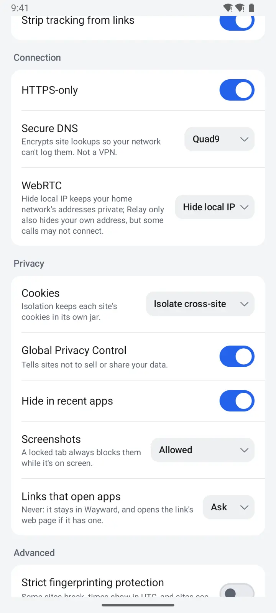
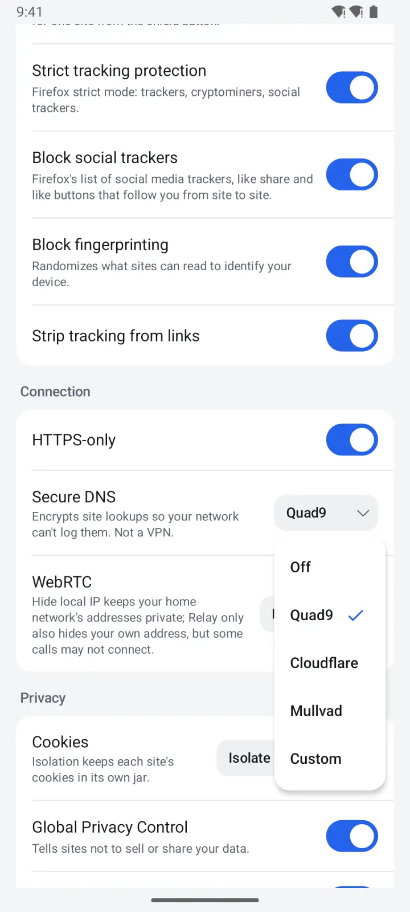
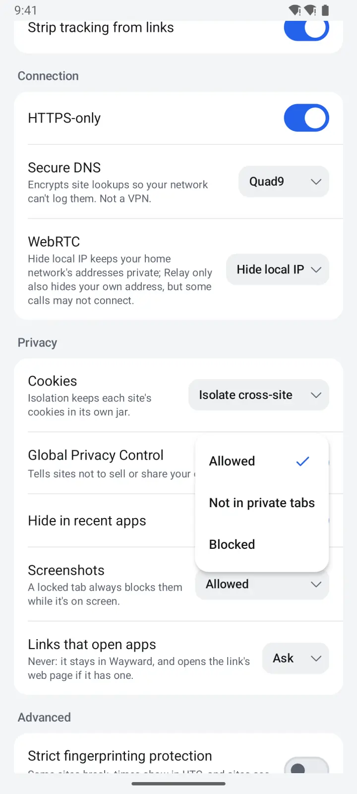

Secure connections, Secure DNS and the other privacy settings
How-to
Below Blocking in Settings > Shields & Privacy, you'll find Connection, Privacy and Advanced. What each setting does, and what Wayward starts with:
Connection
- HTTPS-only (on): pages only load over secure https. A site that can't do https gets a page saying This site doesn't support a secure connection, with Open anyway (not secure) if you still want it. That opens just that site in that tab, over plain http. HTTPS-only is back on as soon as that tab goes to another site, you switch tabs, or you close it, so the next visit asks again.
- Secure DNS (Quad9): encrypts the lookups that turn a site's name into an address, so your network can't log them. Pick Quad9, Cloudflare, Mullvad, Custom (your own provider's DNS-over-HTTPS address, which has to start with https://) or Off. It isn't a VPN: sites still see your IP address.
- WebRTC (Hide local IP): what a site's video calls can learn about your network. Hide local IP keeps your home network's addresses private. Relay only also hides your own address, but some calls may not connect. Off turns video calls in pages off altogether. Default lets sites see your phone's local addresses.


When a site's security certificate can't be checked, Wayward doesn't open it: you see Connection isn't secure. Only continue if you trust the connection, like your own router. Open anyway (not secure) works after a second's pause, and the address bar then shows the globe and Not secure. Wayward forgets the choice when it closes.
Privacy
- Cookies (Isolate cross-site): keeps each site's cookies in its own jar, so a site embedded in another can't follow you around. Block all third-party refuses those cookies altogether: stricter, but some sign-ins that go through another site may stop working.
- Global Privacy Control (on): tells sites not to sell or share your data.
- Hide in recent apps (on): blanks Wayward's picture in your phone's app switcher. Before Android 13, this also blocks screenshots.
- Screenshots (Not in private tabs): Allowed, Not in private tabs or Blocked. Blocking also stops screen recording. A locked tab always blocks them while it's on screen.
- Links that open apps (Ask): when a page's link wants to open another app, Ask asks you each time, and Never keeps you in Wayward and opens the link's web page if it has one.


Advanced
- Strict fingerprinting protection (off): Tor Browser's protection, so Wayward tells sites the same things as every other browser with it on. Some sites break, times show in UTC, and sites see English and a light theme. While it's on, Ask sites for English is on too. It works on pages you load after turning it on.
- JavaScript speed-ups (on): Firefox's JavaScript compilers. Off makes sites slower and stops WebAssembly, in exchange for less that an attack can use. It takes full effect after Wayward restarts.
- Skip AMP pages (on): opens a site's own page instead of its AMP copy from a search engine.
- Ask sites for English (off): sites see English as the only language you read, whatever your phone or Settings > Languages say.

What Shields don't cover
Shields protect web pages. The assistant's connections to your AI provider and the video downloader's connections go around uBlock Origin, HTTPS-only and Secure DNS.
More in Privacy & security
- Lock Wayward down
- See what was blocked, and let a broken site through
- Choose how much Wayward blocks
- Hide pop-ups and overlays on pages
- Camera, notifications and other site permissions
- Use private tabs
- Keep sign-ins apart with spaces
- Lock a tab, your private tabs, a space or Downloads
- Clear data, Shred a site, or delete everything